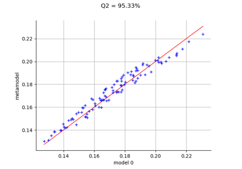

CantileverBeam¶
- class CantileverBeam¶
Data class for the cantilever beam example.
Examples
>>> from openturns.usecases import cantilever_beam >>> # Load the cantilever beam model >>> cb = cantilever_beam.CantileverBeam()
- Attributes:
- dimThe dimension of the problem
dim=4.
- EBeta distribution
ot.Beta(0.9, 3.5, 65.0e9, 75.0e9)
- FLogNormal distribution
ot.LogNormalMuSigma()([300.0, 30.0, 0.0])
- LUniform distribution
ot.Uniform(2.5, 2.6)
- IBeta distribution
ot.Beta(2.5, 4.0, 1.3e-7, 1.7e-7)
- modelSymbolicFunction, the physical model of the cantilever beam.
- RCorrelationMatrix
Correlation matrix used to define the copula.
- copulaNormalCopula
Copula of the model.
- distributionComposedDistribution
The joint distribution of the parameters.
- independentDistributionComposedDistribution
The joint distribution of the parameters with independent copula.
- __init__()¶
Examples using the class¶

Create a polynomial chaos metamodel by integration on the cantilever beam
Create a polynomial chaos metamodel by integration on the cantilever beam



Kriging the cantilever beam model using HMAT
Kriging the cantilever beam model using HMAT


Use the Adaptive Directional Stratification Algorithm
Use the Adaptive Directional Stratification Algorithm